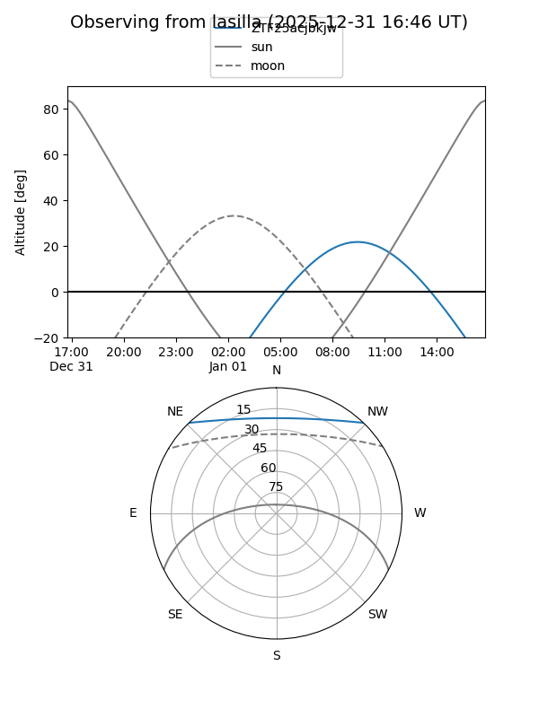
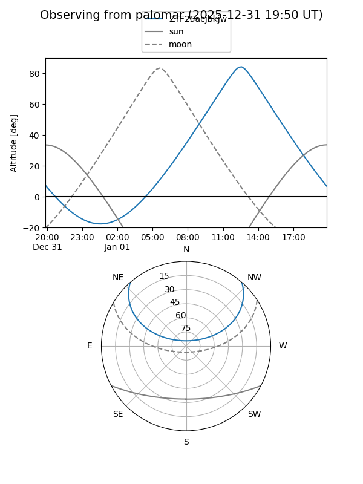

ZTF25acjbkjw
Target ZTF25acjbkjw at 2025-12-22 20:33
Aliases and brokers:
FINK: fink-portal.org/ZTF25acjbkjw
Lasair: lasair-ztf.lsst.ac.uk/objects/ZTF25acjbkjw
ALeRCE: alerce.online/object/ZTF25acjbkjw
alt names
ZTF25acjbkjw (ztf,fink_ztf)
Coordinates:
equatorial (ra, dec) = 171.5999,+39.09032
equatorial (HMS+DMS) = 11:26:23.97,+39:05:25.14
galactic (l, b) = (173.5100,+68.63466)
Flags:
Photometry:
last ztfg=20.86
1 ztfg detections
Lightcurve

Visibility


Additional plots